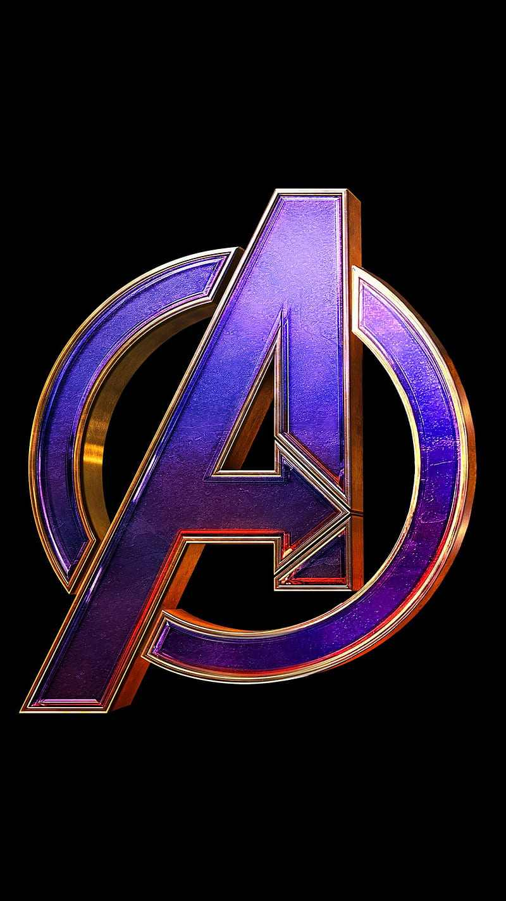

<!-- Viewport meta tag for responsive design -->
<meta name="viewport" content="width=device-width, initial-scale=1.0">

<!-- Title of the web page -->
<title>Marvel</title>

<!-- Link to Bootstrap CSS for styling and layout -->
<link rel="stylesheet" href="https://maxcdn.bootstrapcdn.com/bootstrap/3.3.7/css/bootstrap.min.css">

<!-- Link to FontAwesome for icon support -->
<script src="https://kit.fontawesome.com/92d42647e8.js" crossorigin="anonymous"></script>

<!-- Preconnect to Google Fonts for optimized font loading -->
<link rel="preconnect" href="https://fonts.googleapis.com">
<link rel="preconnect" href="https://fonts.gstatic.com" crossorigin>

<!-- Link to Google Fonts for custom font styles -->
<link
  href="https://fonts.googleapis.com/css2?family=Arimo:wght@400;700&family=Bruno+Ace&family=Chakra+Petch:wght@500&family=Rajdhani&display=swap"
  rel="stylesheet">

<!-- Link to FontAwesome CSS for additional icons -->
<link rel="stylesheet" href="https://cdnjs.cloudflare.com/ajax/libs/font-awesome/6.4.0/css/all.min.css">

<!-- Link to favicon for the website icon in browser tab -->
<link rel="shortcut icon" type="x-icon" href="../../assets/logoImg/mLogo.png">

<!-- Script tags for jQuery and Bootstrap JavaScript -->
<script src="https://code.jquery.com/jquery-3.6.0.min.js"></script>
<script src="https://maxcdn.bootstrapcdn.com/bootstrap/3.3.7/js/bootstrap.min.js"></script>

<!-- Navigation bar component -->
<nav>
  <!-- Logo image displayed in the navigation bar -->
  

  <!-- Menu icon for mobile view -->
  <label id="icon" (click)="toggleMenu()">
    <!-- Display hamburger icon when the menu is closed -->
    <ng-container *ngIf="!isMenuOpen">
      <i class="fas fa-bars"></i>
    </ng-container>
    <!-- Display close icon when the menu is open -->
    <ng-container *ngIf="isMenuOpen">
      <i class="fas fa-times"></i>
    </ng-container>
  </label>

  <!-- Navigation menu list -->
  <ul [ngClass]="{ 'show': isMenuOpen }">
    <!-- Navigation links -->
    <li><a href="/">Home</a></li>
    <li><a href="/movies">Movies</a></li>
    <li><a href="/tv-shows">Tv Shows</a></li>
    <li><a href="/trivia">Trivia</a></li>
    <li><a href="/search">Search</a></li>

    <!-- Login link displayed if user is not logged in -->
    <li *ngIf="!authService.isLoggedIn" id="login"><a href="/login">Login</a></li>

    <!-- User profile dropdown menu displayed if user is logged in -->
    <li *ngIf="authService.isLoggedIn" id="user-profile" class="dropdown" [class.open]="isDropdownOpen">
      <!-- Dropdown toggle link -->
      <a href="javascript:void(0);" id="userDropdown" (click)="toggleDropdown()">
        <!-- Display user's selected avatar or a default avatar -->
        <ng-container *ngIf="authService.selectedAvatar">
          
        </ng-container>
        <ng-container *ngIf="!authService.selectedAvatar">
          
        </ng-container>
        <!-- Display user's name with a caret icon -->
        {{ authService.userName }} <span class="caret"></span>
      </a>

      <!-- Dropdown menu items -->
      <ul class="dropdown-menu">
        <li><a href="/avatar" class="avatar">Avatar</a></li>
        <li><a href="/login" class="logout" (click)="logout()">Logout</a></li>
      </ul>
    </li>
  </ul>
</nav>
